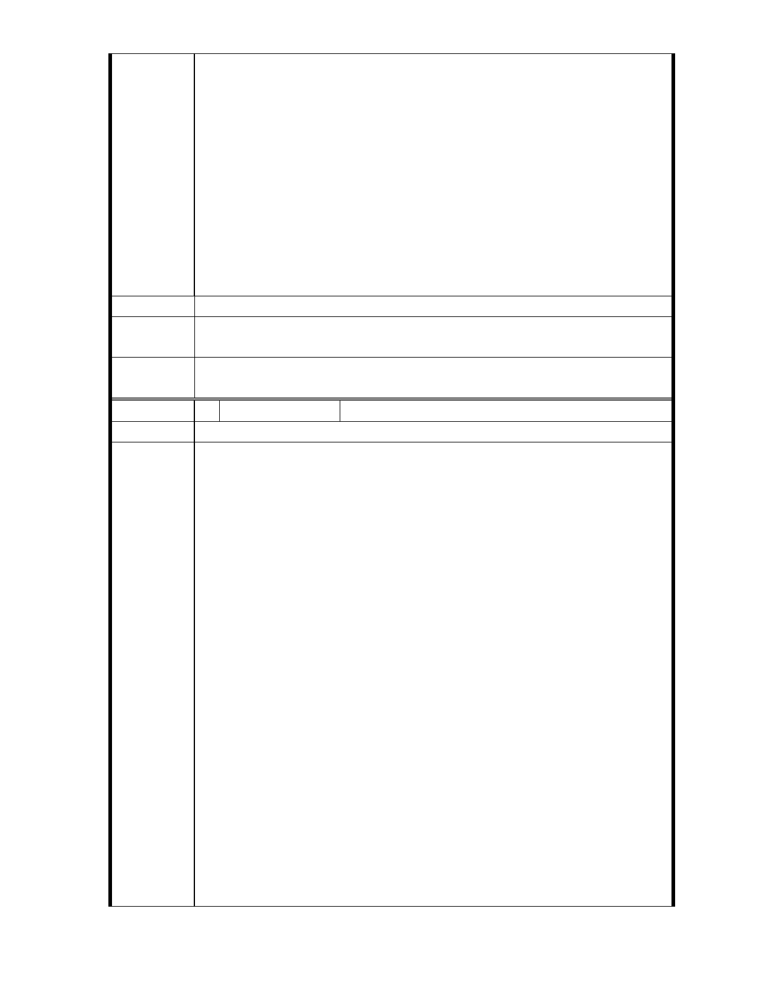

頃閱報載中影文化城擬變更地目，由教育文化用地變為「文化創
業專用地」，如成為事實，則必影響近鄰東吳大學未來之發展，深
以為憂。數年前中影易手，紹堉與前校長劉兆玄兄，即與郭台強
晤談，請以不沿大馬路，但與東吳大學連接部分土地，價讓東吳
，至今未獲同意，如一旦變更地目，則必再無希望。憲法規定國
陳情理由
家對於國內私人經營之教育事業，成績優良者，予以獎勵與補助
，貼近東吳大學之教育文化用地，變更地目，俟與憲法上述意旨
欠合，且必引起全校師生熱烈反對。爰特建議，如必須變更地目
，應要求地主以鄰近東吳大學之土地三千坪，回饋市府，再由市
府與東吳大學合作，興建學生宿舍，供鄰近各大學學生住宿用。
如此既可避免校區左右有不適當之建築，亦符合市府住宅政策，
擬請惠予考慮為禱。
建議辦法
專案小組
結論
同編號 2
委
決
員
會
議
同編號 2
編 號 5 陳情人 兆亨事業有限公司
建 議 位 置 士林區至善段 5 小段 80、81、117 地號
緣臺北市政府都市發展局（下稱「都發局」）於民國 100 年 3 月 1
日公告配合大故宮文化創意園區，士林區外雙溪地區都市計畫通
盤檢討（主要計畫），並公開展覽 30 天，陳情人敬提意見如下：
一、 都發局未能依法行政，一意孤行，戕害人民對於政府之信賴
，更嚴重損害人民之財產權：
（一） 陳情人有意於本地區之「加油站用地」設置加油站，經都
發局審核准予核發建造執照，詎施工中都發局竟違法廢止
建造執照，幸經最高行政法院判決都發局違法濫權而敗訴
確定；其後該加油站用地又遭臺北市政府濫權變更為公園
用地，然亦經內政部訴願審議委員會撤銷臺北市政府之違
法行政處分。臺北市政府及都發局於歷經挫敗後，仍不放
陳情理由
棄以通盤檢討之方式宣告本加油站禁建，陳請人不解，為
何堂堂臺北市政府要針對「合法領有建造執照」且「合法
興建」之業者，窮盡一切手段以公權力阻止與打壓？臺北
市政府及都發局違法濫權在前，造成陳情人極大的損失，
卻在後續國家賠償程序中為唯唯諾諾，與先前違法濫權之
態度判若兩人，政府威信掃地，莫若於此。
（二） 都發局有意將該加油站用地變更為公園用地，實非都市計
畫通盤檢討之常態：
1. 據聞都發局為順應周圍居民之意見，有意將該加油站用
地規劃變更為公園用地云云；但其實，每個人都希望自
己住家旁邊就是公園，除可提升居住品質外，也可使自
家房地產價值水漲船高。也正因為每位市民都希望與可
- 14 -